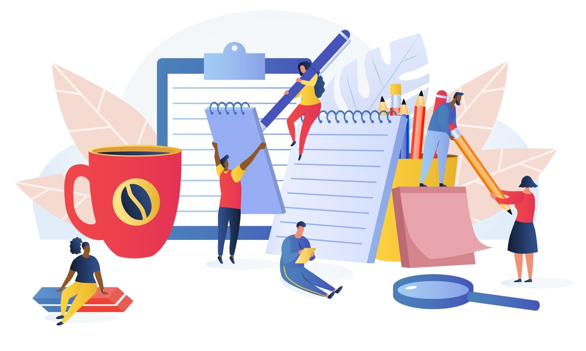

Оптимизация цифровой полки: как управлять позицией, контентом и ценой для роста продаж
В e-commerce больше нет случайностей. То, на какой позиции в поиске находится товар, как выглядит его карточка и какие отзывы оставляют пользователи — напрямую влияет на продажи. Цифровая полка — это не метафора, а реальное поле битвы за выручку. Бренды, которые управляют ею системно, получают больше продаж без дополнительных затрат на рекламу. Остальные — теряют трафик, не зная об этом.
В этой статье разбираем, что такое цифровая полка, из чего она состоит, почему она важна и как сделать так, чтобы ваш товар не просто «присутствовал», а уверенно продавался.
Что входит в понятие «цифровая полка»
Это всё, что видит покупатель, когда ищет и выбирает товар онлайн:
- позиция товара в поиске и категории на маркетплейсах;
- качество карточки: фото, видео, описание, характеристики;
- цена, доставка, наличие;
- рейтинг, отзывы, метки («хит», «новинка», «акция»);
- быстрота логистики и статус FBS/FBO.
Всё это влияет на видимость, привлекательность и решение о покупке. Оптимизация цифровой полки — это непрерывная работа, основанная на аналитике и тестировании.
1. Позиция в выдаче: быть первым — значит продавать
В поисковой выдаче выигрывают те, кто адаптирует карточки под алгоритмы площадки. Чтобы подниматься, нужно следить за:
- конверсией просмотров в заказы;
- ценой относительно аналогов в категории;
- количеством и качеством отзывов;
- участием в программах маркетплейса (например, Premium);
- скоростью обработки заказов и количеством продаж за 30 дней.
Постоянный мониторинг позиций по ключевым запросам позволяет увидеть, как изменяется ранжирование и вовремя реагировать на падение.
2. Контент: ключ к доверию и клику «купить»
Большинство пользователей пролистывают карточку, не читая. Поэтому контент должен быть одновременно красивым, структурным и полезным.
Вот что должно быть в фокусе:
- главное изображение — яркое, с чистым фоном;
- галерея — с вариантами, деталями, упаковкой;
- видео — короткое, информативное, с применением;
- инфографика — для снятия возражений и ответов на FAQ;
- SEO-оптимизация описания под запросы внутри площадки.
Особенно важно, чтобы всё работало корректно на мобильных устройствах: более 70% покупок совершаются именно с них.
3. Цена: управляемый рычаг, а не просто цифра
Цена влияет не только на конверсию, но и на видимость. Площадки отдают предпочтение товарам, где цена адекватна спросу.
Инструменты, которые сегодня работают:
- динамическое ценообразование на основе цен конкурентов;
- использование зачёркнутой старой цены при наличии реальной скидки;
- оптимизация ценовых порогов с учётом маржи;
- автоматическое участие в акциях с ограничениями по остаткам.
Мониторинг цен и гибкая настройка в режиме реального времени — это способ управлять прибылью и сохранять позиции.
4. Ассортимент: стратегия вместо хаоса
Один из частых провалов — дублирование товаров и конкуренция собственных SKU между собой. Это снижает общую конверсию и сбивает аналитику.
Что важно:
- объединение вариаций (размер, цвет) в одну карточку;
- архивация устаревших или медленных товаров;
- выделение SKU под конкретные ключевые запросы;
- сравнение матриц с конкурентами по категориям.
Эффективная полка — это не просто наличие ассортимента, а его грамотная презентация и оптимизация.
5. Гео и каналы: мультиформатная оптимизация
Товар может выглядеть по-разному в зависимости от региона и канала продаж. Важно контролировать:
- наличие на локальных складах (особенно в крупных городах);
- участие в логистике площадки (FBS, FBO);
- разницу в карточках между Ozon, Wildberries, Яндекс Маркет и др.;
- собственный сайт и метаагрегаторы (например, СберМегаМаркет).
Оптимизация цифровой полки должна учитывать географию и специфику каждого канала. Только тогда удастся сохранить целостную стратегию.
6. Постоянный контроль обеспечивают рост
Работа с полкой — это не проект на один месяц. Это процесс. Лучшие продавцы ежедневно тестируют заголовки, обложки, описание, отслеживают отзывы и оперативно правят карточку.
Что включают лучшие практики:
- мониторинг позиций и цен конкурентов по ключам;
- анализ изменений в алгоритмах маркетплейса;
- A/B-тесты визуала, CTA, описания;
- отработка негатива в отзывах;
- автоматическая синхронизация изменений между каналами.
Это требует инструментов мониторинга, аналитики и автоматизации. Но без этого — невозможно масштабировать продажи.
Цифровая полка — это актив
Если вы не контролируете, где находится ваш товар, как он выглядит и что о нём пишут — значит, вы теряете деньги. Позиция, контент и цена — три кита, на которых держится эффективность e-commerce в 2025 году.
Подключите систему мониторинга данных и аналитики, которая позволяет отслеживать нужные вам магазины и позиции конкурентов. Это не только увеличит продажи, но и даст вам прозрачную картину происходящего.
Помните: сегодня в цифровой торговле побеждает не тот, кто тратит больше, а тот, кто анализирует быстрее.